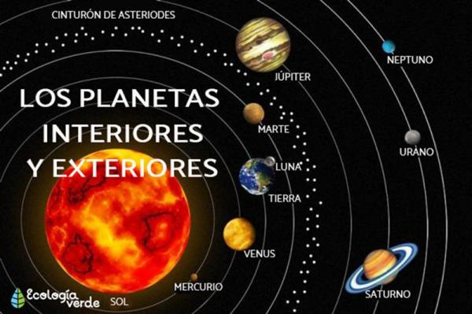

Clases de planetas según su distancia respecto al sol
Otra forma de clasificación de los planetas muy utilizada debido a su facilidad es aquella que atiende a su distancia respecto a su nuestra estrella, el Sol. Dentro de esta clasificación existen dos partes: por un lado se encuentran los planetas del Sistema Solar, que siguen una clasificación utilizada en exclusiva para ellos, ya que utiliza como punto de separación el cinturón de asteroides del sistema solar.
- Planetas interiores. Aquellos planetas que se encuentran entre el Sol y ese cinturón se les conoce como planetas interiores. Los planetas interiores son: Mercurio, Venus, Tierra y Marte.
- Los planetas exteriores son aquellos que se encuentran después del cinturón de asteroides y son: Júpiter, Saturno, Urano, Neptuno y Plutón.
- Los planetas que no orbitan alrededor del Sol se denominan planetas extrasolares. Estos planetas suelen orbitar alrededor de estrellas pulsares y enanas marrones.
